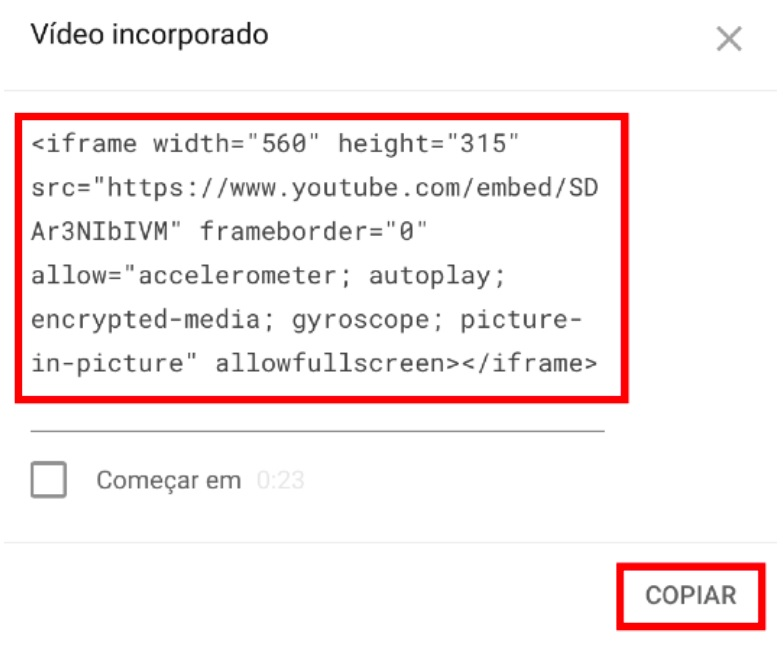

Veremos sobre imagens flexíveis. Aprender a gerar imagens de tamanho diferentes e a fazer o navegador carregar a imagem certa para cada situação. Usando as tags <picture> e <source>. Essas imagens serão carregadas pelo navegador de acordo com o tamanho da janela atual.
A tag <img> será colocada dentro da tag <picture> que conterá outras fontes de imagem.
Com o HTML5, tem uma nova facilidade de compartilhar áudio nos sites sem depender de plugins extras. Basta uma tag <audio> e alguns <source> para fazer o site ser capaz de tocar qualquer áudio.
Os principais atributos da tag <audio> são:
preload indica se o áudio será pré-carregado ou não e aceita três valores:metadata - carrega apenas as informações sobre o arquivo (tamanho, tempo, informações de direito, etc)none - não carrega nada até que o usuário clique no play ou um script inicie a reprodução.auto (padrão) - carrega o arquivo inteiro assim que a página carrega, mesmo que o usuário nunca aperte playcontrol vai apresentar o player na tela. Caso não seja colocado na tag, o controle será transparente e o usuário não poderá interagir com ele.autoplay, quando inserido, vai iniciar a reprodução assim que a página for carregadaloop vai fazer com que o áudio seja repetido eternamente assim que terminar sua reproduçãoPara inserir um vídeo em nosso site, podemos utilizar a nova
tag <video> da HTML5, caso o arquivo esteja hospedado no nosso próprio servidor.
Atributos importantes da tag video
width - indica a largura que o vídeo vai ter na tela.poster - configura uma imagem que vai aparece como capa enquanto o visitante não aperta play para reproduzir o vídeo.controls - configura se os controles vão aparecer na parte inferior da mídia. Por padrão, eles não aparecem, mas basta colocar a palavra control na tagautoplay diz para o navegador se o vídeo vai começar a tocar automaticamente, assim que a página for carregada.Arquivos de vídeos não são tão simples, o formato indica o padrão para abrir e reproduzir a mídia. Vídeos possuem formatos e codecs e isso pode tornar o vídeo inviável de ser reproduzido pela maioria dos navegadores na maioria dos dispositivos.
Os formatos suportados são: MPEG, WEBM e OGG. Os dois primeiros são os que possuem maior compatibilidade.
Por ser muito caro e pesado manter vídeos em um site, existem outras formas de colocar um vídeo em um site. Com o youtube, é possível incorporar.
FICA ASSIM: